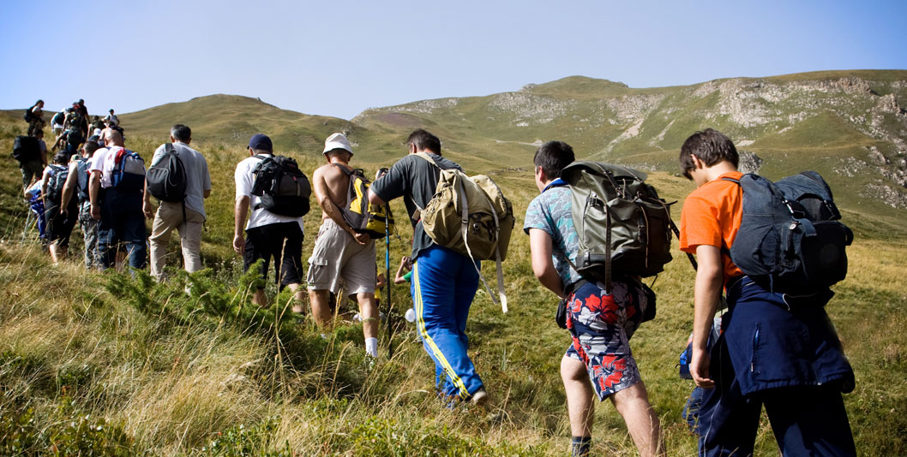

About :
Trekking is the outdoor recreation
of carrying gear on one's back, while
hiking for more than a day.
It is often but not always an extended
journey, and may or may not involve camping outdoors.
Backpacking is an outdoor recreation where gear is carried in a backpack. This can include food, water, bedding, shelter, clothing, stove, and cooking kit. Weight is necessarily key. Backpacking trips consist of at least one night and can last for weeks or months, sometimes aided by planned resupply points or drops.
Survival skills can provide peace of mind and may make the difference between life and death when the weather, terrain, or environment turns unexpectedly for the worse.Navigation and orienteering are useful to find the trailhead, then find and follow a route to a desired sequence of destinations, and then an exit.
First aid: effectively dealing with minor injuries (splinters, punctures, sprains) is considered by many a fundamental backcountry skill. More subtle, but maybe even more important, is recognizing and promptly treating hypothermia, heat stroke, dehydration and hypoxia, as these are rarely encountered in daily life.